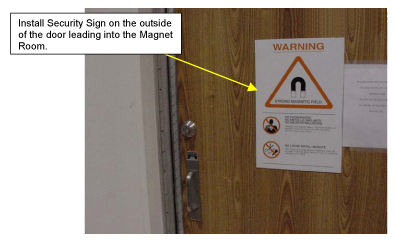
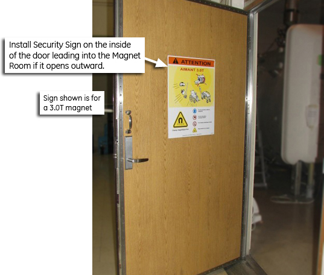
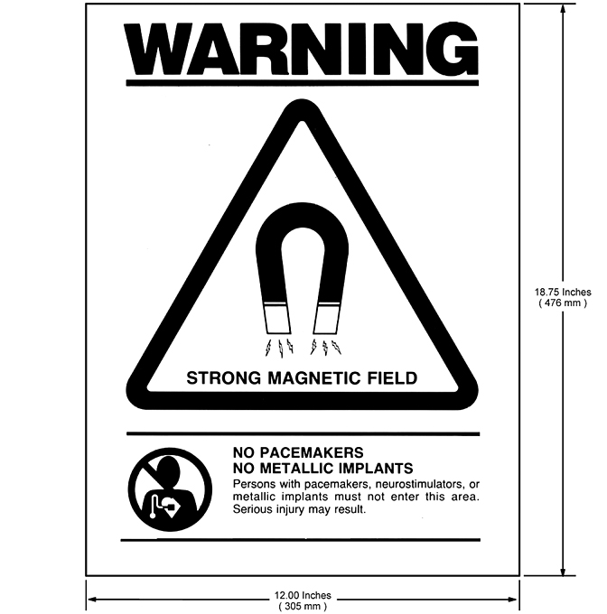
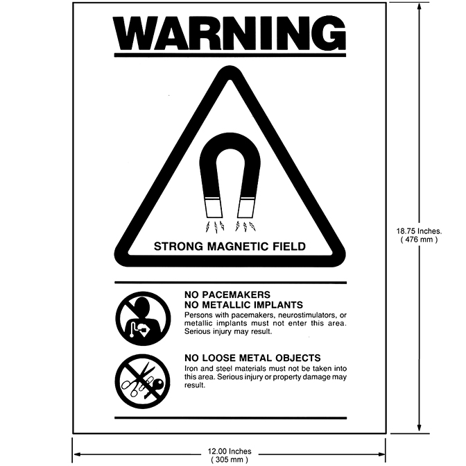
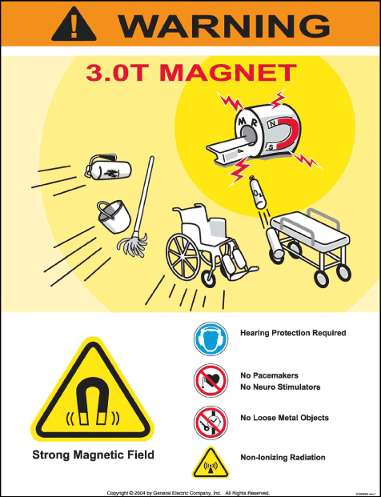
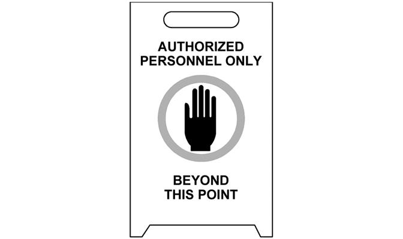
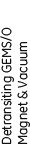
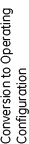
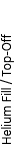
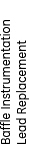

Operating Documentation
Direction 5133330-3, Rev# 14
Signa EXCITE HD 3.0T Service Methods
Module Version 7.0, Version Date 9/16/10
Operating Documentation |
The need to take proper precautions when servicing highly ferrous components in a magnetic environment is critical. Failure to do so may result in death or serious injury to service engineers.
This section introduces an explicit service policy when servicing highly ferrous devices in a magnetic field. Devices such as docks, longitudinal drive motors, blowers, passive shims, and cold heads are examples of highly ferrous devices that fall under this policy as follows:
When servicing any magnetic equipment, it is critically important that the service engineer consciously plan the path to be taken when moving highly ferrous devices in the magnet environment. The path should be as far from the magnet as practical and avoid high flux-density fields. Safety Requirement
When planning a service path, it is critical that the path be clear and sufficiently wide. Ensure there are no trip hazards, obstacles, clutter, slippery surfaces, or any other items even partially restricting the path. If there are portable obstacles in a path, temporarily remove them from the area and replace them after the service action is completed. It is required to walk the paths prior to beginning service to ensure there is sufficient space through which to pass for yourself and the object being serviced. |
The Magnetic Resonance Imaging (MRI) System utilizes a magnet that can have a field strength several thousand times greater than that of the earth's magnetic field. The magnetic field surrounding the magnet is called the fringe field, and it extends from the magnet's isocenter in all dimensions. The fringe field may present a hazard to persons and equipment within the surrounding area. Therefore, magnetic field precautions must be applied to the floors above and below the magnet, as well as to the surrounding space on the same level. To minimize the risk to persons and equipment when the magnet is at field, follow the precautions listed below:
| NOTE: | Unless a specific responsibility is otherwise indicated, these statements apply to anyone accessing the system |
(GE Task) Post “SECURITY ZONE” signs, on both sides of any doors that lead into the magnet room to alert persons of the high magnetic field and not to bring ferromagnetic objects into the magnet room. See Illustration 1 and Illustration 2.
Part numbers for field-strength related “SECURITY ZONE” signs are as follow:
For 0.2T, 0.35T, 0.7T, 1.0T and 1.5T systems, use part number 46-255325P1 (Illustration 4).
For 3.0T systems, use part number 5120663 (Illustration 5).
For 7.0T systems, use part number 2360019-2.
For 9.4T systems, use part number 2360019-3.
(Customer Task) Post WARNING signs, part number 46-255326P1, outside the 5 gauss zone alerting persons with cardiac pacemakers, neurostimulators, and other biostimulation devices of the effect of the magnetic field on these devices. See Illustration 3. Post these signs two days prior to the activation of the magnet for maximum impact.
(GE Task) Set up the AUTHORIZED PERSONNEL signs, part number 2289812, at the entrance(s) to the magnet room prior to the start of magnet service procedures. See Illustration 6.
(GE Task) Notify responsible personnel two days prior to the activation of the magnet to allow for preparatory actions to be accomplished.
(GE Task) Do not bring ferromagnetic objects (including TOOLS, pens, tape measures, and vacuum pumps) into the magnet room when the magnet is at field unless otherwise called for in the GE service methods documentation.
(GE Task) For active shield magnets, refer to the Pre-Installation Manual for the 5, 100, and 200 Gauss zones. For non-active shield magnets (such as SIII and 7.0T), measure the gauss levels in the surrounding area and make sure the 5, 100, and 200 Gauss zones for that site are specified in writing and left at the site in the same location and along with the paper service safety manuals
| NOTE: | The Pre-Installation Manuals (PIMs) can be found at the
following link. Refer to PIMs in the MR section of this website ONLY. http://www.gehealthcare.com/company/docs/siteplanning.html#mr |
Do not bring ferromagnetic objects within the 200 gauss zone and do not bring ferromagnetic objects on wheels within the 100 gauss zone.
Use only nonmagnetic cylinders, nonmagnetic cylinder carts, and Dewars when transferring cryogens into an energized Superconducting magnet.
Do not take self-winding watches, magnetically-coded credit cards, magnetic recording heads, magnetic tapes, or cameras near the magnet when it is at field.
Identify the magnetic field strength of the system before entering the magnet room to perform service procedures. For systems with a magnetic field strength of 3.0T and higher the field strength is displayed on the security sign posted on the magnet room door.
Do not bring the nonmagnetic tool kit into the magnet room. The case has ferrous components that will result in it being attracted to the magnet in field zones > 500 gauss.
| NOTE: | The Local GE Field Service Operation will provide the highly visible (orange, black, and white) security and warning signs in the primary local languages. |
Illustration 1: Security Sign on Outside of all Magnet Room Doors

Illustration 2: Security Sign on Inside of Magnet Room Doors that Open Outward

Illustration 3: Magnet Field Exclusion Zone Warning Sign (46-255326P1)

Illustration 4: Magnetic Field Security Zone Sign (46-255325P1) for Magnets < 3.0T

Illustration 5: Magnetic Field Security Zone Sign for 3.0T Magnets (5120663)

Illustration 6: Authorized Personnel Sign (2289812)

The magnet technology used on MR Systems may vary from one product design to another. There are three (3) basic magnet technologies used by suppliers today: 1) Superconducting Magnets, 2) Permanent Magnets, and 3) Resistive Magnets. Each magnet technology will have emergency response processes unique to that design. For example, If a person is pinned to the magnet by a ferromagnetic object or that object has become attached to the magnet then the Magnet technology will dictate the appropriate action to be taken. Therefore, go to the appropriate Magnet section in this document and refer to the First Aid/Emergency Situations subsection for specific actions. This document addresses designs relating to Superconducting Magnets.
Superconducting magnets contain cryogenic liquids (liquid helium = 4 kelvin (-452° F, -269° C); liquid nitrogen = 77 kelvin (-321° F, -196° C) and generate a strong three-dimensional magnetic field. These conditions require safety precautions to be taken to prevent serious injury (cryogenic burns, asphyxiation, explosion, fire, shock, ferromagnetic projectiles, or other magnetic field effects). The safety precautions/requirements contained in the following sections must be reviewed, understood, and implemented prior to performing any service on a Superconducting Magnet. Make sure that all magnet service is performed by trained and authorized personnel and all safety equipment is in place.
All persons working with cryogens and/or cryogenic liquids should understand the following:
Nature and properties of liquid and gaseous helium and nitrogen
Specific instructions on the equipment
Use and care of protective equipment and protective clothing
Safety and first aid
Handling emergency situations such as leaks, spills and fires
The Field Service Engineer is responsible to make sure the following items are in compliance:
Review all service processes to be performed on the magnet with the facility safety officer or with the local authorities (i.e., fire department, safety council, etc.) and obtain any required permits prior to magnet commissioning and servicing.
There are two types of venting required in the magnet room: Magnet Room Venting and Cryogen Venting.
Magnet Room Venting
Ensure magnet room venting has been installed, tested, and operating in conformance with pre-installation manual requirements.
Any service actions that release large quantities of cryogenic gas shall have provisions for exhausting the gas through the magnet vent system.
Cryogen Venting
Ensure the magnet is vented in conformance with the pre-installation manual requirements. Magnet plumbing and vent system shall be inspected for leaks during magnet installation.
A portable floor fan and exhaust duct shall be used to remove the cold nitrogen gas that stratifies at floor level, from the room to the outside, during nitrogen pre-cool.
The door into the magnet room must be secured in the open position prior to any service action that will result in the handling or release of cryogens from the magnet. The ceiling hatch and rear door shall be secured in the open position if in a mobile van.
Make sure a second person (GE employee, contractor, or hospital personnel trained in these safety requirements) is present in the area during magnet service in case of emergency.
A working phone line accessing an outside line shall be available in case of an emergency.
Set up “Authorized Personnel Only” signs outside the magnet room door(s) prior to any magnet servicing.
Make sure an Oxygen Monitoring device is calibrated and operating properly before beginning any magnet service.
Always maintain a clear exit path. If a Dewar is to be used in the magnet room, then the path must be wide enough to accommodate the Dewar.
Do not bring any ferromagnetic equipment, Dewars or cylinders into the magnet room when the magnet is ramped. They will become dangerous projectiles in the presence of the magnetic field.
Helium gas cylinders are pressurized to ~2400 psi. Secure each helium cylinder before removing the protective cap and open the main valve very slowly to prevent any possibility of a fatal release of explosive gas. Make sure gas cylinders are stored in an upright secured position.
Firmly hold the unattached end of the gas hose during a purge to prevent hose’s “whipping“ motion.
Keep Dewars in the vertical position at all times. Dewars should have wheels mounted at the base for transport. If wheels are not present, use a low platform dolly that fully encompasses the Dewar’s base for moving. Do not slide or roll Dewars. Use a suitable hand truck to move gas cylinders.
Make sure the transportation route for Dewars and gas cylinders is clear of obstacles and restrictions.
Check Dewars for high pressure and follow documented service procedures for reducing pressure prior to use.
Check all equipment, Dewars, and gas cylinders for leaks.
Make sure that safety relief valves and regulators are operating properly.
Store Dewars in a well-ventilated area as outlined in the room ventilation pre-installation manual.
Contact of liquid cryogens or their vapors with the eyes can cause severe frostbite even when contact is too brief to affect the skin. Always wear safety glasses and face shield when handling cryogens.
Protective clothing (long sleeve shirt, long pants, protective apron/jacket), dry, non-absorbent insulated gloves, and face/eye protection (face shield and safety glasses) shall be worn when handling or being exposed to cryogens to prevent cold burns from contact with the cryogenic liquid or gas.
Make sure a calibrated, functioning oxygen monitor is installed in the magnet room in conformance with site requirements or place a functioning portable oxygen monitor in the magnet room and cryogen storage area. The position of the O2 monitor sensor should be at a level that corresponds to the cryogen product being stored or dispensed (i.e., for liquid helium the sensor should be near the ceiling; for liquid nitrogen the sensor should be near the floor).
If the alarm mode of the oxygen monitor is activated, immediately evacuate the room. Determine the cause and if ventilation is a problem, correct the situation.
Be sure that the oxygen monitor is reading a safe level before you enter the affected area to continue with service procedures.
Smoking is prohibited in the magnet room and around cryogens. The extreme low temperatures of liquid helium and nitrogen cause oxygen from the air to liquefy on cold surfaces (e.g., on the transfer tubes). This produces a highly enriched oxygen liquid. There is a potential fire danger if grease or oil come in contact with these surfaces, since they are combustible substances.
When pluming a stinger, always point the stinger toward the ceiling and away from the face at a 45-degree angle.
Do not bring more than 1000 liters or two (2) Dewars (whichever is less) of cryogens into the magnet room.
Do not bring nitrogen and helium Dewars into the magnet room at the same time
RAMP MAGNET DOWN TO ZERO FIELD prior to any service requiring opening/exposure to the helium vessel and/or cryogenic gas/liquid, except for the removal of fill and ramp lead port caps. This prevents the possibility of a magnet quench and rapid expulsion of cryogenic helium gas and liquid.
Make sure non-ferromagnetic fiber or composition safety shoes are worn in the magnet room.
Observe helium vessel pressure gauge and vent the magnet down to < 0.5 psi before removing ramp/fill port caps or loosening component resulting in the release of cryogenic helium gas and liquid.
Never allow a helium Dewar to empty during a magnet fill, resulting in a magnet quench from the introduction of warm helium gas.
Wear proper personal protective equipment (PPE) .
Use appropriate service procedure and exercise caution when inserting ramp leads or a shim lead into a ramped magnet to prevent a quench.
Avoid rapid head and eye movements when working near or inside the magnet bore to minimize dizziness.
Always have a Work Assistant/Observer available when performing work near or inside the magnet bore.
Never allow yourself to be positioned between the magnet and any unknown objects that may be brought into the magnet room.
Limit the access into the magnet room before performing service in the room. This can be achieved by installing a Yellow & Black Caution tape across the door opening and placing the “Authorized Personnel” sign below it.
Identify the type of magnet and its field strength before performing service in the magnet room. The Security signs are installed on the entrance doors into the magnet room. These signs indicate the field strength of magnets over 1.5T that is inside the room.
Use caution when using the non-titanium tools as they do have an attraction to the magnet at fields over 500 gauss.
Do not bring the non-magnetic tool kit into the magnet room. It will become attracted to the magnet if exposed to a field > 500 gauss.
In the event of an emergency situation:
If a human being is pinned to the magnet by a ferrous object, immediately push the button on the Emergency / Magnet Rundown Unit (ERU or MRU) to quench the magnet.
Notify proper emergency responders.
Do not make any rescue attempts until the environment has been verified as being safe for normal occupancy, then move persons suffering from a lack of oxygen immediately to an area with normal atmosphere and seek medical assistance.
Use large volumes of tepid water, within the temperature range of 105°F (41°C) to 115°F (46°C), to flush frostbitten or cold burn areas and get medical attention immediately. Notify the physician that this is a cold burn.
(For helium-only systems) In case of a magnet cryogenic vent failure during a quench stay near the floor where the oxygen will be and immediately exit the magnet room.
If a ferromagnetic object has become attached to the magnet and cannot be safely removed by two people, the magnet will have to be ramped down.
If you are in the magnet room and a quench occurs follow these basic rules:
Remain calm; don't panic.
Open the scan room door, prop it open, and exit the room immediately.
Turn on the exhaust fan for the scan room (if not automatically turned on by oxygen monitor).
If the door cannot be opened, stay near the floor. This is where the oxygen is.
If the door cannot be opened, exit through the window.
In addition to all considerations listed in Section 2.1, make sure these precautions are followed to minimize risk to personnel resulting from the magnetic fringe field.
Post “Ramped Magnet” warning sign at magnet room entrance PRIOR to ramping the magnet.
Prior to ramping the magnet, ensure all ferromagnetic material (such as the blower box) is either properly installed as a part of the magnetic resonance system OR completely removed from the magnet room. Confirm that the room construction does not contain ferrous material.
Prior to ramping the magnet, make sure that the Magnet Rundown Unit (MRU) is operating properly.
Do not loosen any ferromagnetic components on a ramped magnet unless specifically called for in the service documentation.
Wear leather gloves when opening or closing the coldhead motor shield.
Use caution when opening or closing the top half of the coldhead motor shield. Never put your hand or fingers between the motor shield and mounting bracket.
A Superconducting magnet at field is a high energy storage device capable of discharging rapidly (quenching), creating a high voltage across the main leads. Make sure the following precautions are observed when ramping a Superconducting magnet.
When working with the main lead connections that are installed into a ramped magnet do not touch both main lead extensions at the same time or allow them to come in contact with one another.
Allow main lead extensions to cool before fully inserting them into a ramped magnet to prevent any possibility of a quench.
Make sure the power supply has passed all functional checks and the input power cable is disconnected before connecting it to the main power leads.
Make sure the final magnet “parking” current and voltage polarity has been recorded and will be available if a ramp-down is required. An incorrect polarity connection will result in a magnet quench.
Use the appropriate hold-down tool to properly secure ramp leads to the magnet.
Make sure the Magnet Rundown Unit (MRU) has been installed in conformance with the GE Magnet Service Manual, the batteries have been charged for 24 hours and the MRU has passed the functional checks in conformance with the supplier manual before ramping the magnet.
Make sure the ramp-down methods covered in the introduction of the GE Magnet Service Manual are fully understood by field service engineers involved with the MR equipment.
Hospital personnel involved with the MR equipment should be familiar with the equipment operator’s manual and Magnet Rundown Unit operation.
Table 1: Service Procedure Safety Requirements
| Service Procedure (X = Required Item for Procedure) | ||||||||||||||||
|---|---|---|---|---|---|---|---|---|---|---|---|---|---|---|---|---|
| Magnet | Other | |||||||||||||||
 |  |  |  |  |  |  |  |  |  |  |  |  | ||||
| 1 | Cryogenic vent system installed per requirements. | - | - | - | X | X | X | X | X | - | X | X | X | X | X | - |
| 2 | Special permits obtained, if required by local authorities, for use of inert gasses / cryogens during magnet commissioning and service procedures. | X | X | - | X | X | X | X | X | X | X | X | X | X | X | - |
| 3 | Mobile van ceiling hatch secured open. | X | X | X | X | X | X | X | X | - | X | X | X | X | X | - |
| 4 | Room ventilation fan tested and running (room exhaust at ceiling). | - | X | X | - | X | X | X | X | - | X | X | X | X | X | - |
| 5 | Room ventilation fan tested and running (room exhaust at floor). | - | - | - | X | - | - | - | - | - | - | - | - | - | - | - |
| 6 | Vent magnet and inspect exhaust. | X | X | X | X | X | X | X | X | - | - | X | X | X | X | - |
| 7 | Second person present and trained in safety practices for procedure being performed. | X | X | X | X | X | X | X | X | X | X | X | X | X | X | X |
| 8 | Fully functional land-line telephone (with emergency response numbers clearly posted beside it) in known an immediately available location near Magnet Room. | X | X | X | X | X | X | X | X | X | X | X | X | X | X | - |
| 9 | Magnet Room doors secured open to assist in room ventilation. Ensure cross ventilation to outside or other large volume non-workspace. | X | X | X | X | X | X | X | X | - | X | X | X | X | X | X |
| 10 | O2 monitor on site, tested and functional for both visual and audible alarms, whenever cryogens are being stored or dispensed. Portable device 2287000 for magnets up to and including 3.0T. | X | X | X | X | X | X | X | X | - | X | X | X | X | X | - |
| 11 | Cryogen safety kit (46-271137G1) on site for use. Kit includes cryogen gloves, face shield and goggles. | X | X | X | X | X | X | X | X | - | X | X | X | X | X | - |
| 12 | Nonferrous safety shoes. | X | X | X | X | X | X | X | X | X | X | X | X | X | X | X |
| 13 | Inspect the Service Platform thoroughly prior to use. Make sure the platform is in acceptable condition. | X | X | X | X | X | X | X | X | X | X | X | X | X | X | - |
| 14 | Secure area and display signs altering or intended process. | X | X | X | X | X | X | X | X | X | X | X | X | X | X | X |
| 15 | Verify Dewar transportation path is clear. | - | - | - | X | X | X | X | - | - | - | - | - | - | - | - |
| 16 | Dewars stored in a ventilated area. | - | - | - | X | X | X | X | X | - | - | - | - | - | - | - |
| 17 | Not-in-use gas cylinders secured to wall with protective cap in place. | X | - | - | X | X | X | X | X | - | X | X | X | X | X | - |
| 18 | Before removing protective cap on gas cylinder, secure to wall or nonmagnetic cart. | X | - | - | X | X | X | X | X | - | X | X | X | X | X | - |
| 19 | Move gas cylinders / Dewars without wheels using hand trucks designed for purpose (Nonmagnetic gas cylinder card 46-305717G1). | X | - | - | X | X | X | X | X | - | X | X | X | X | X | - |
| 20 | Keep gas cylinders / Dewars in upright position at all times. | X | - | - | X | X | X | X | X | - | X | X | X | X | X | - |
| 21 | Keep ferromagnetic equipment / objects out of magnet room when magnet is ramped. | - | - | - | - | X | X | X | X | X | X | X | X | X | X | X |
| 22 | Use only non-magnetic tools in the magnet room when the magnet is ramped. Note: the cast bronze tools (46-320273G4) contain 3% iron, which make the tools more attractive to higher field strength magnets. Do not bring the tool kit into a field >500 G. | - | - | - | - | X | X | X | X | X | X | X | X | X | X | X |
| 23 | Wear long-sleeved shirt and apron designed for cryogenic servicing. | - | - | - | X | X | X | X | X | - | X | X | X | X | X | - |
| 24 | Inspect all pressure regulators for proper functioning. | X | - | - | X | X | X | X | X | - | X | X | X | X | X | - |
| 25 | Inspect all pressure relief valves and ensure proper configuration to achieve recommended pressure (3.g., 20 psi). | X | - | - | X | X | X | X | X | - | X | X | X | X | X | - |
| 26 | Inspect all valves and fittings for leaks. | X | - | - | X | X | X | X | X | - | X | X | X | X | X | - |
| 27 | MRU installed and tested prior to magnet ramp. | - | - | - | - | - | - | X | X | X | X | X | X | X | X | - |
| 28 | Post "Ramped Magnet" warning signs included in kit 46-258770G4. | - | - | - | - | - | - | X | - | - | - | - | - | - | - | - |
| 29 | Install the Security Zone sign, at eye level, on all doors leading into the magnet room. Install the sign on both sides of the door if the door opens outward from the magnet room. | - | - | - | - | - | - | X | - | - | - | - | - | - | - | - |
| 30 | Post "Authorized Personnel Only" signs (2289812) at entrance to MR suite. | X | X | X | X | X | X | X | X | X | X | X | X | X | X | - |
| 31 | Notify hospital administrator when magnet is ramping. | - | - | - | - | - | - | X | - | - | - | - | - | - | - | - |
| 32 | Remove all ferromagnetic material from magnet room before ramping or shimming magnet. | - | - | - | - | - | X | X | X | X | - | - | - | - | - | - |
| 33 | Use only single Dewar connection (I.e., no daisy-chain connections). | - | - | - | X | X | X | X | X | - | - | - | - | - | - | - |
| 34 | Identify and label Dewars as "full" or "empty"; label Dewar storage area. | - | - | - | X | X | X | X | - | - | - | - | - | - | - | - |
| 35 | Remove frost from valve operators on magnet after each Dewar charge. | - | - | - | X | X | X | X | - | - | - | - | - | - | - | - |
| 36 | Notify hospital engineering personnel prior to use of any equipment (I.e., heat guns, propane torches, welding equipment, etc.) that could set off the fire alarm system. | X | X | X | X | X | X | X | X | X | X | X | X | X | X | - |
| 37 | Identify and understand the properties and operation of the site's fire suppression system (i.e., water sprinkler, halon, CO2, etc) and how to respond to alarms. | X | X | X | X | X | X | X | X | X | X | X | X | X | X | - |
| 38 | Reduce magnet helium vessel pressure to 0.2 psig before performing service. | - | X | - | - | - | X | X | - | - | X | X | X | X | - | - |
| 39 | Use product-defined tools and personal protective equipment (such as gloves, goggles and protective clothing) when removing or installing passive shim material / assemblies. | - | - | - | - | - | - | - | - | X | - | - | - | - | - | - |
| 40 | Make sure the 5, 100, & 200 Gauss levels are specified for the site (NOTE: For active shield magnets, this information is in the Pre-Installation Manual. For non-active shield magnets, the magnetic field must be measured using either 46-306801G1 or 2293050). | - | - | - | - | - | - | X | - | X | - | - | - | - | X | X |
| 41 | Plan clear service path without obstacles and wide enough to walk through with the device being serviced. The path should be as far from the magnet as practical, avoid high flux density fields, and as much as possible in a field strength of less than 200 Gauss. | - | - | - | - | - | - | - | - | X | - | - | - | - | X | X |
The Work Assistant/Observer System (second person on site) is required whenever service is performed on the Superconducting magnet subsystem. It is critical that a Work Assistant/Observer is always present to ensure your safety. A Work Assistant/Observer is more than just a second person that is “around” while you are working. A Work Assistant/Observer is someone who will maintain communication with you at all times and sound the alarm in case of an emergency and may even assist in performing the service procedure, if qualified.
All individuals selected to perform the task of either “Work Assistant” or “Work Observer” must comply with the prerequisite training and complete the certification form located in Table 3, Worker Certification/Agreement Form. A signed copy of the certification must remain on file at the customer site.
Worker Certification/Agreement Form
| ||||
| All individuals selected to perform the task of either “Work Assistant” or “Work Observer” must comply with the prerequisites training and complete the certification. Do not allow a person to function as a Work Assistant/Observer (second person) until all the Mandatory requirements are completed for the category being performed. | ||||
INSTRUCTIONS:
Table 2 is to be completed by the individual that is being certified to function as either a Work Assistant or Work Observer. He or she must certify that s/he posses the qualifications of a “Second Person”, and initial the appropriate “Assistant” or “Observer” column to show s/he has been certified.
Table 2: Second Person - Work Assistant/Observer Requirements
| Safety Requirement | Work Assistant | Work Observer | Initialed by Second Person When Complete | Comments | |
|---|---|---|---|---|---|
| 1 | Must have completed all required EHS training. | MANDATORY | |||
| 2 | Completed and have on file the medical clearance form “Magnetic Resonance Employee Questionnaire For Metallic Foreign Body and Electronic Devices,” available from the GEMS Medical department. | MANDATORY | MANDATORY | ||
| 3 | Must have completed the magnet and cryogen safety training portion of MR 508, Principles of MRI, or MR512, Magnet & Cryogen Safety (CD-ROM) | MANDATORY | MANDATORY | ||
| 4 | Must know how to wear the proper PPE for the procedure being performed as described in the service documentation and/or demonstrated by the Site FE performing the qualification process. | MANDATORY | |||
| 5 | Needs to be a FE, GE employee, or magnet-knowledgeable person. | MANDATORY | |||
| 6 | Know how to evacuate the area (Emergency escape route) as demonstrated by the primary FE | MANDATORY | MANDATORY | ||
| 7 | Know how to notify emergency responders as per site emergency process. | MANDATORY | MANDATORY | ||
| 8 | Will not attempt a rescue until the atmosphere is determined safe by use of a calibrated instrument designed for measuring atmospheric air quality. | MANDATORY | MANDATORY | ||
| 9 | Know how to control and operate the valves on the gas cylinders / regulators and cryogenic Dewars. | MANDATORY | |||
| 10 | Know how to terminate the cryogen tranfil operation on both the Dewars and the magnet in the event of a problem. | MANDATORY | |||
| 11 | Know how and when to perform an emergency run down procedure as defined in the service documentation. | MANDATORY | MANDATORY | ||
| 12 | Know how and when to initiate “Emergency OFF” as defined in the service documentation. | MANDATORY | MANDATORY | ||
| 13 | Know how to respond to an oxygen monitor alarm. | MANDATORY | MANDATORY | ||
| 14 | Know what to do during a quench. | MANDATORY | MANDATORY | ||
| 15 | Know the physical changes or indicators of working in an oxygen deficient atmosphere. | MANDATORY | MANDATORY | Your Work Assistant/Observer MUST:
| |
| 16 | Identify and understand the properties and operation of the site's fire suppression system (i.e., water sprinkler, halon, CO2, etc.) and how to respond to alarms. | MANDATORY | MANDATORY | ||
Table 3: Certification Agreement
| I understand and will comply with the MR Work Assistant/Observer
System Requirements (Print) Name of Work Assistant/Observer: Signature: Date: |
| I certify the person above meets or exceeds the MR Work Assistant/Observer
System Requirements for the selected category/procedures. (Print) Name of FE: Signature: Date: |
The Primary Field Engineer must keep the completed forms on site |